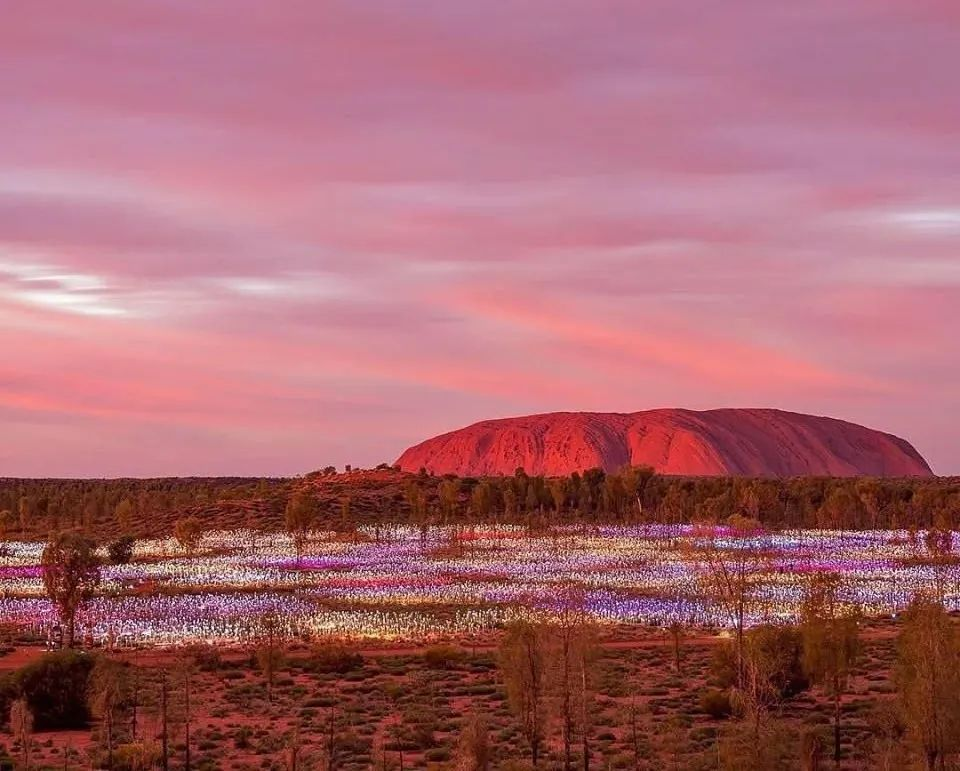
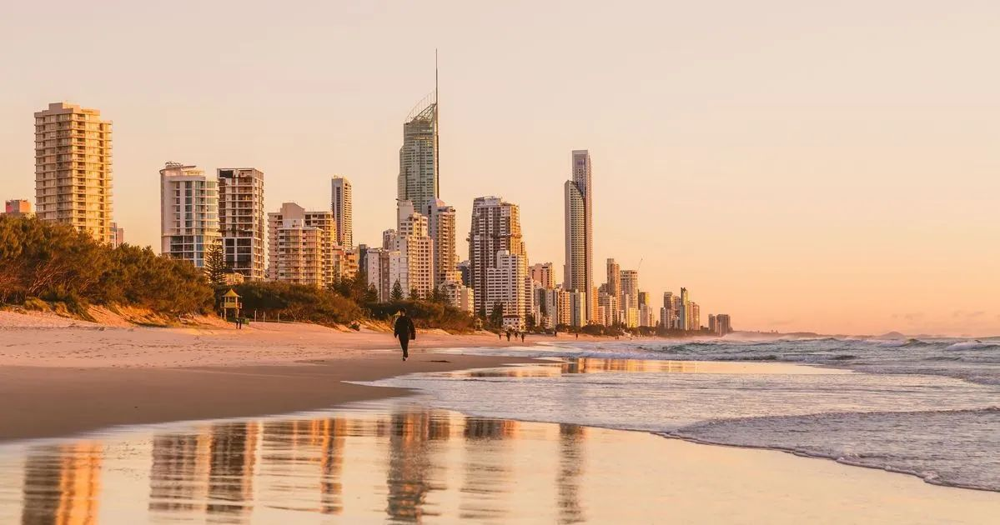
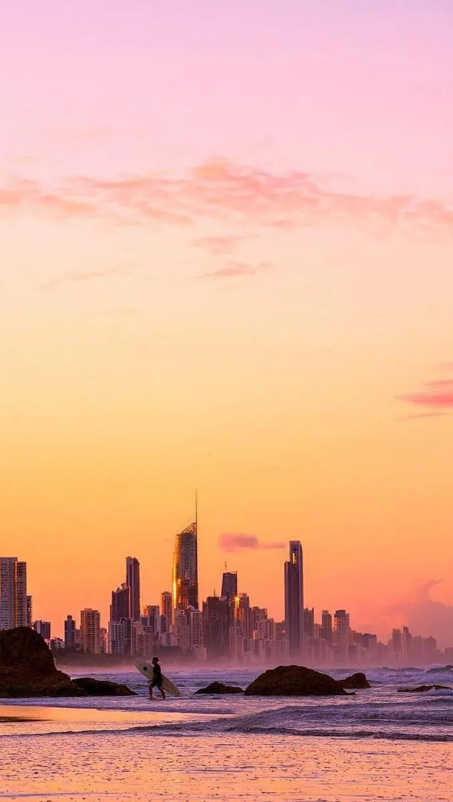

Роадбук группы · июль 2026
Австралия
Три стихии: воздух, огонь, вода
15 днейМельбурн → Брисбен4 перелётачерез континент
Сценарий путешествия
Путешествие по континенту, выстроенное как последовательная смена состояний — от городской культуры к дикой природе, через сакральный центр континента к абсолютному расслаблению у океана...
Большие города как акты одного путешествия
Из чего соткан маршрут
Маршрут
Континент за 15 дней
Австралия
Шесть точек на карте
Мельбурн — Великая океанская дорога — Улуру — Сидней — острова Кораллового моря — Брисбен.
Пятнадцать дней
что в какой деньВ стоимость тура